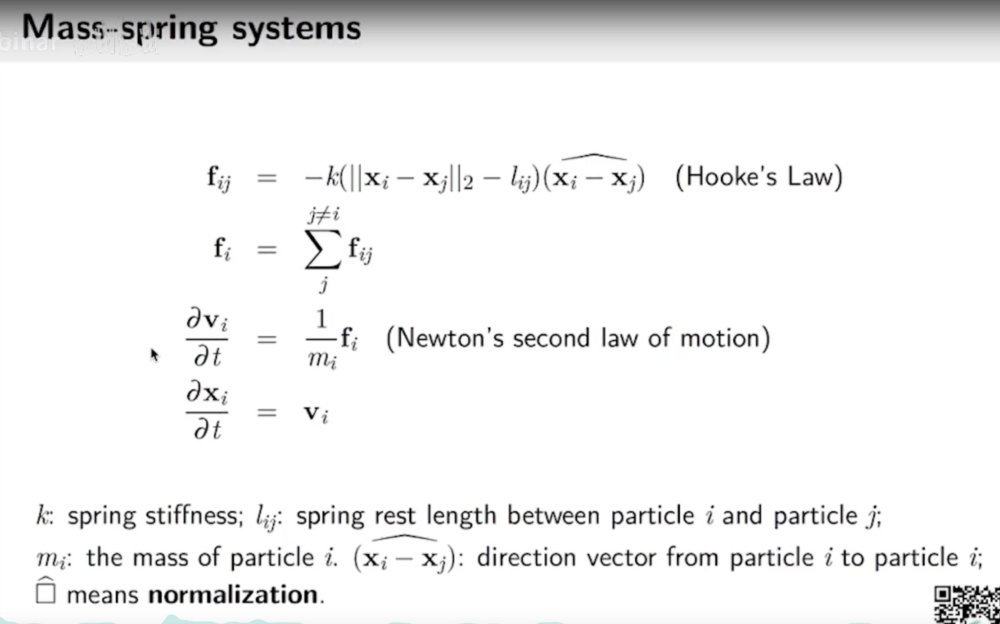
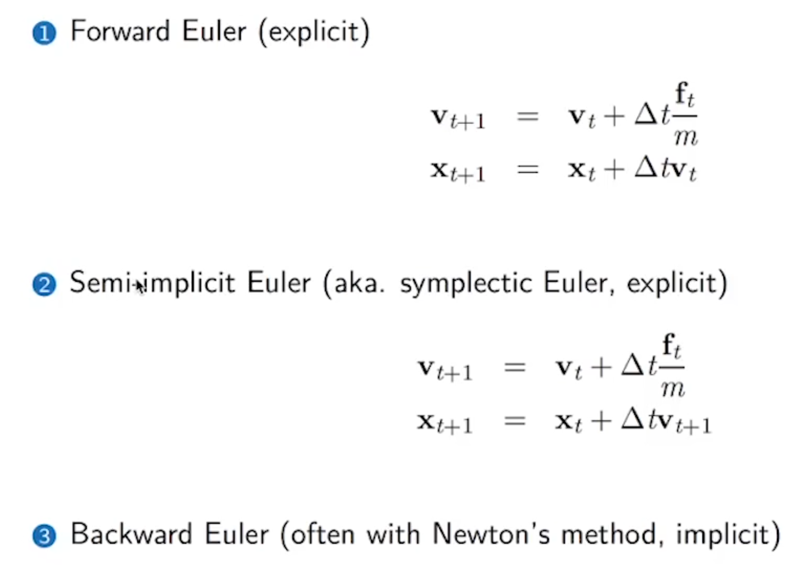
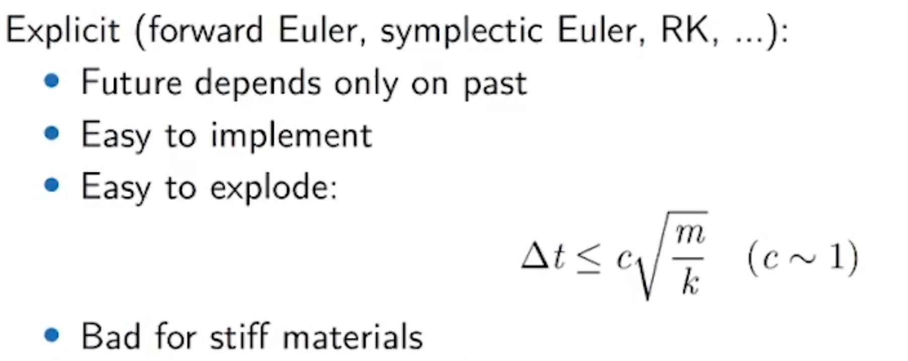
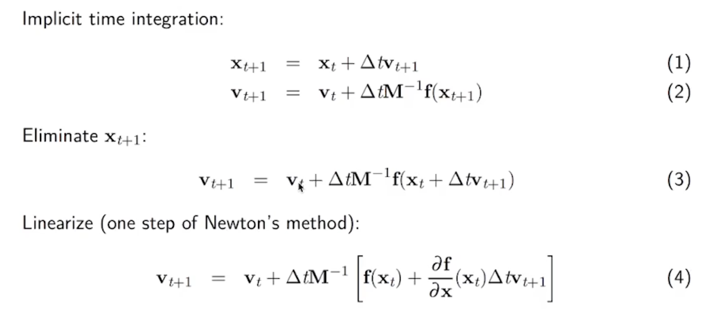
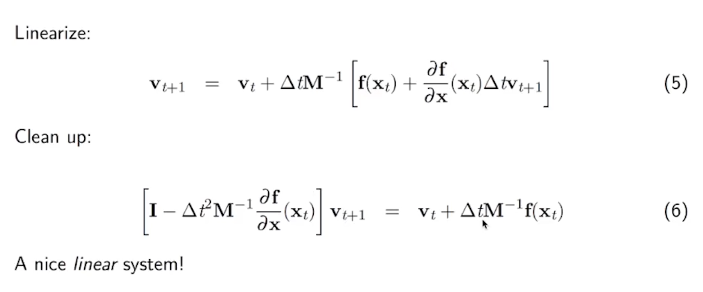
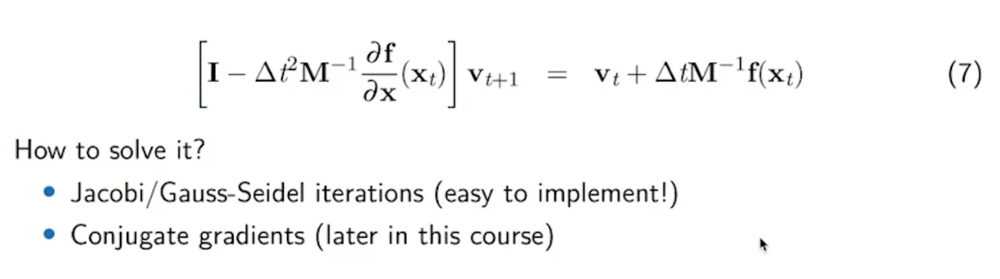
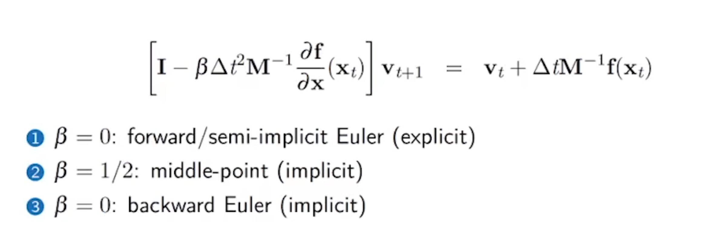
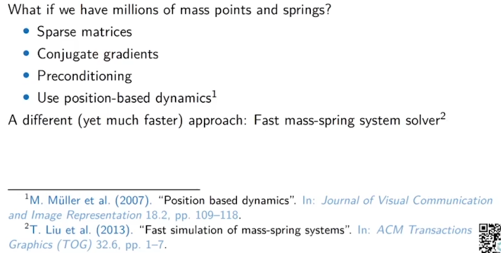

弹簧质点系统
受力分析
弹簧指点系统遵循胡克定律&牛顿运动定律：

并不复杂（当然需要考虑重力）。
时间积分

前向欧拉
通过当前的状态推测下一步的状态
- 通过当前的受力分析计算加速度，推断下一步的速度（ ）
- 通过当前的速度计算下一步的位移
半隐式欧拉 （AKA. Symplectic Euler 对偶欧拉）
- 通过当前的受力分析计算加速度，推断下一步的速度（ ）（和上面一样）
- 用计算出来的新速度计算下一步的位移
实现的时候，在更新计算和地面的碰撞的时候，更新位置之前首先计算和地面的碰撞（pos.y<bottom_height?），如果碰撞的，把速度设置为0。
上面两种都是显式时间积分器，问题在于对步长有限制，不可太大，否则容易爆炸：

这个公式的原因是：超过了Nyquist采样频率（TODO 找一些文献）
后向欧拉
隐式时间积分不止这一种，还有Middle-Point之类。
缺点：
- 难以实现，难以优化
- 每一步都会变得更加昂贵
优点：
- 可以容忍更加大的步长

可以看到，1和2互相依赖，所以代入求解：

按照道理说，求逆矩阵是最好的，但是时间复杂度不可接受，所以我们用雅可比迭代之类的方法替代：

雅可比迭代的一个实现：
@ti.kernel
def iterate():
for i in range(n):
r = b[i]
for j in range(n):
if i != j:
r -= A[i, j] * x[j]
new_x[i] = r / A[i, i]
for i in range(n):
x[i] = new_x[i]
但是雅可比迭代使用有限制，只能收敛一些性质比较好的矩阵，对谱半径有一些要求。
使用共轭梯度的话就会更快一点。
从这里就可以看出来不同求解器的区别和联系：

大规模求解器
（仅仅是索引）
